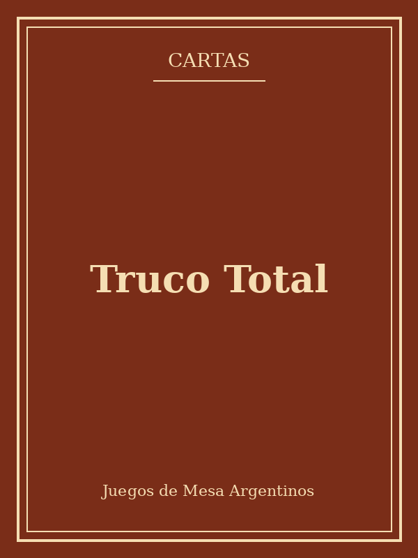

Truco Total
★★★★★
Esta edición reúne el mazo tradicional de cuarenta cartas junto con fichas de puntaje y un mazo de "flores" para animar aún más el envido. La caja incluye una guía rápida con las señas más usadas en distintas regiones del país.
Es el juego de cartas de mesa por excelencia en cualquier reunión: rápido de aprender, imposible de dejar de jugar.